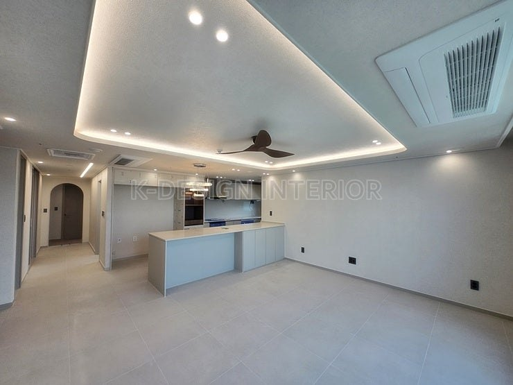

경기 평택 동삭동
동삭동
아파트·주택 인테리어
동삭동 주거공간 인테리어는 전체 리모델링부터 욕실, 주방 부분 시공까지 가능합니다. 현장 실측 후 디자인과 항목별 견적을 먼저 안내해 드립니다. SRT 지제역과 가까운 곳인 동삭동도 자주 상담합니다.

동삭동에서 주거공간 인테리어를 준비한다면
동삭동 아파트는 같은 단지라도 세대마다 확장 여부와 배관 상태가 다릅니다. 케이디자인은 실측 때 세대 상태를 확인하고 그에 맞춰 공사 범위를 정합니다.
평택은 고덕국제신도시 같은 신도시와 평택역 주변 원도심, 안중읍·팽성읍 같은 읍 지역이 함께 있는 도시입니다.
동삭동으로 이사를 앞두고 계신다면 입주 날짜에 맞춘 인테리어 일정부터 정해 보세요. 케이디자인은 실측 후 공정표와 견적을 함께 드립니다.
케이디자인이 시공한 주거공간 현장
케이디자인이 설계하고 시공한 현장입니다. 사진을 누르면 크게 볼 수 있습니다.
아일랜드 주방과 거실
사각 우물천장, 시스템 에어컨 매립거실 아트월
대리석 패턴, 실링팬거실과 주방
원목 마루, 오픈 공간욕실
샤워부스, 거울장 간접조명동삭동 주거공간 시공 분야
필요한 공정만 골라 부분 시공으로 맡겨도 됩니다.
- 아파트 리모델링
- 부분 시공
- 욕실
- 빌라, 단독주택
- 도배, 바닥
- 주방
- 한 팀이 끝까지설계와 시공을 같은 팀이 해서 처음 계획이 중간에 달라지지 않습니다.
- 가까운 시공 지역천안, 아산, 당진, 평택을 중심으로 시공해 동삭동 현장도 일정 조율이 수월합니다.
- 대표 직접 상담전화를 받은 사람이 현장에 나가고, 공사 마무리까지 확인합니다.
공사 순서 한눈에 보기
공정이 바뀔 때마다 진행 상황을 공유합니다.
전화 상담
평수와 공사 범위, 희망 일정을 알려주세요.
현장 실측
현장 치수와 배관·전기 위치를 확인합니다.
디자인과 견적
공정별로 나눈 견적과 디자인 시안을 안내합니다.
시공
공정마다 진행 상황을 공유합니다.
완공과 점검
마감 상태를 같이 둘러보고 인도합니다.
동삭동 주거공간 인테리어, 이렇게 준비하세요
평택 동삭동 현장을 상담할 때 함께 확인하는 내용입니다.
관리사무소 신고와 이웃 안내
아파트 공사는 관리사무소 신고와 엘리베이터 보양, 이웃 동의가 필요한 경우가 많습니다. 동삭동 현장도 착공 전에 함께 챙깁니다.
바닥재 고르기
포세린 타일, 강마루, 원목 마루는 느낌과 관리 방법이 다릅니다. 생활 방식에 맞는 바닥재를 비교해서 고를 수 있게 안내합니다.
조명으로 넓어 보이는 거실
우물천장 간접조명, 매립등, 라인 조명을 함께 쓰면 거실이 넓고 아늑해 보입니다. 아래 시공 사례의 거실들이 그렇게 만들어졌습니다.
예산은 우선순위부터
동삭동 집 인테리어 예산이 정해져 있다면 꼭 바꿀 곳과 나중에 해도 되는 곳을 먼저 나눕니다. 항목별 견적으로 조정이 쉽습니다.
자주 묻는 질문
동삭동 아파트 인테리어도 시공하나요?
네. 평택 동삭동 아파트, 빌라, 단독주택 인테리어와 리모델링을 시공합니다.
동삭동 오래된 아파트도 전체 리모델링이 되나요?
가능합니다. 오래된 집일수록 배관과 전기 상태를 먼저 보고, 교체가 필요한 곳을 견적에 함께 넣어 드립니다.
욕실이나 주방만 부분 시공할 수 있나요?
네. 전체 리모델링뿐 아니라 욕실, 주방, 도배, 바닥 등 부분 시공도 상담 가능합니다.
평택 다른 동네도 시공하나요?
네. 평택 전 지역과 천안, 아산, 당진, 평택의 주거공간 인테리어를 시공합니다.
- 상호
- 케이디자인
- 대표
- 김명구
- 시공 분야
- 주거공간, 상업공간 인테리어
- 시공 지역
- 충남 천안, 아산, 당진 / 경기 평택